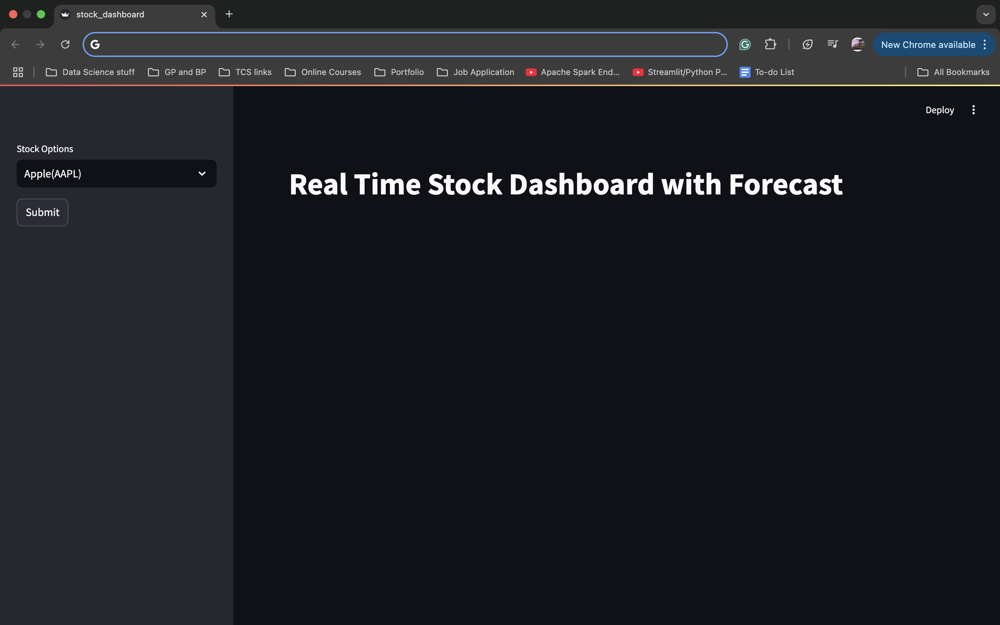
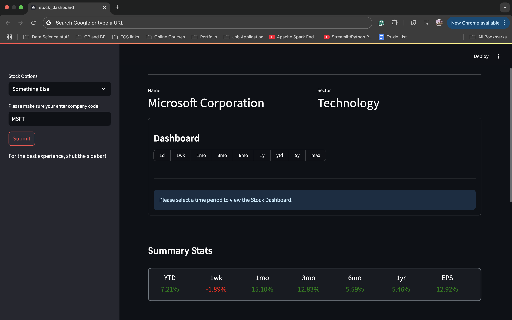

Stock Dashboard
This is a web app that is inspired by popular stock trading apps like Freetrade, Rise by Motilal Oswaal, and of course, Yahoo Finance. In this app, I have created a dynamic dashboard for any company available on Yahoo Finance that displays the stock price for the selected company over a time period that can be selected by the user. Additionally, I have also displayed summary statistics for different time periods that capture the stock performance. Finally, I display a 30-day forecast using the Holt-Winters Triple Exponential Smoothing algorithm.
The goal of this website was NOT to demonstrate my investment knowledge or UI/UX expertise. However, it was to demonstrate how a simple dashboard can be made quite easily within 2-3 days using tools like Streamlit. I also took this opportunity to practice my commenting skills on the .py file. So check it out! :)
Dashboard snapshots
Following are some screenshots from the app:
The Landing page
Choosing a company
Screen-recording displaying the entire dashboard
Instructions to use this app:
- Download the
stock_dashboard.pyfile from here: https://github.com/evlasnoraa/Stock-Dashboard - Make sure you are in the same directory as your .py file.
- Use pip install command to install all libraries. Use pip3 install if pip install doesn't work.
- Type this into terminal:
- Enjoy!
streamlit run stock_dashboard.py